Quinta Real de Caxias (Portugal), restauro e réplicas do conjuntos escultóricos em terracota do escultor portugues Joaquim Machado de Castro sec XVII, (esculturas fontenárias das estações: Primavera, Verão, Outono e Inverno).
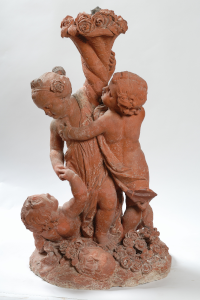 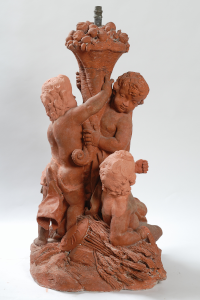 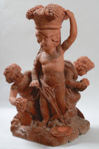 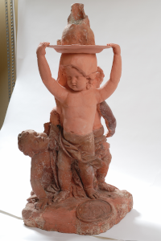Quinta Real de Caxias (Portugal), restauro e réplicas do conjuntos escultóricos em terracota do escultor portugues Joaquim Machado de Castro sec XVII, (esculturas: Ceres, Guerreiro Romano, Jupiter, Narciso).
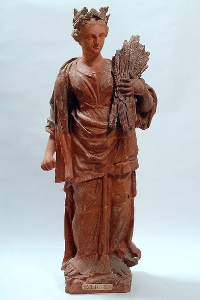 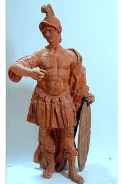 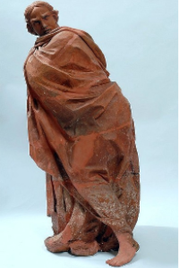 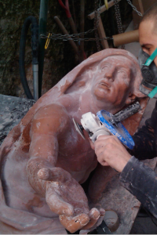Quinta Real de Caxias (Portugal), restauro e réplicas do conjuntos escultóricos em terracota do escultor portugues Joaquim Machado de Castro sec XVII, (esculturas: Flora Farnesio, Flora, Leandro, Banho de Diana).
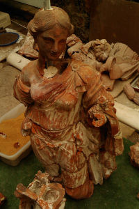 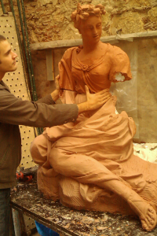 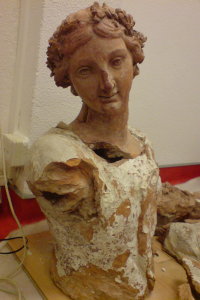 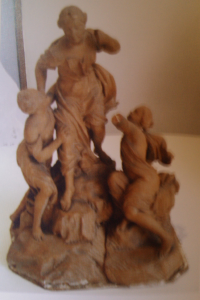Quinta Real de Caxias (Portugal), restauro da estrutura edificada da casacata, do aquario monumental, da cegonha em fiança, sec XVII, .
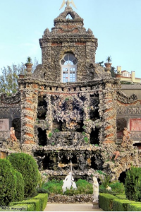 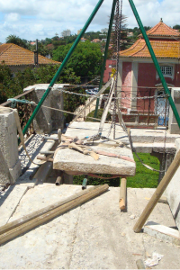 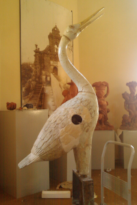 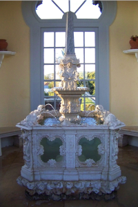trabalhos executados em São Paulo (Palacete Toledo Lara, Edifício do Tribunal de Justiça, Fonte Monumental da Avenida São João).
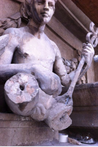 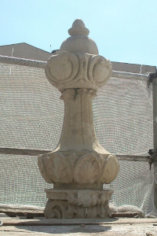 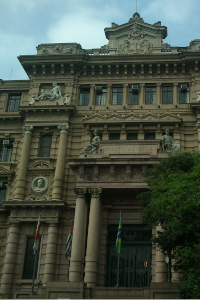 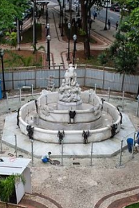Réplicas de arte antiga em Portugal (Marco Miliario Romano sec II a.c, Mosaico Romano de Apolo sec IV, Escultura Bicéfala de Portugal).
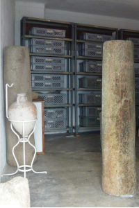 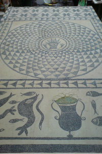 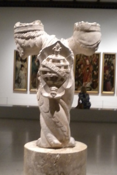Restauros de esculturas de faixadas em Florianópolis.
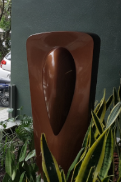 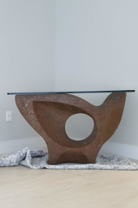 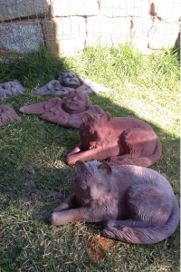Restauro dos 8 altares em mármore da Igreja de São Luis do Paraitinga (Tolosa SP) sec XVIII (Altares: Mor, Nossa Sra das Dores, São Vicente, Santíssimo).
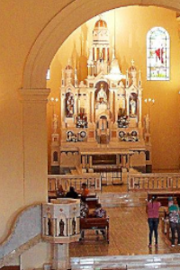 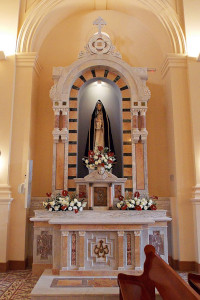 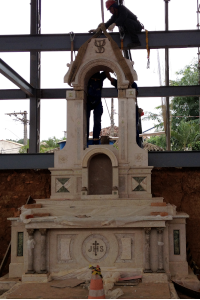 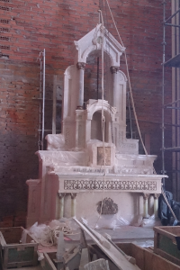Restauro dos 8 altares em mármore da Igreja de São Luis do Paraitinga (Tolosa SP) sec XVIII (Altares de: São Braz, Sta Cecília, Sta Trezinha, Sto Antônio).
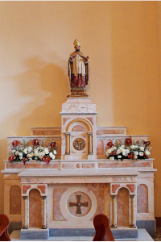 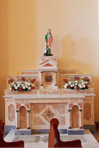 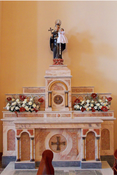 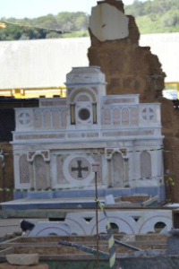